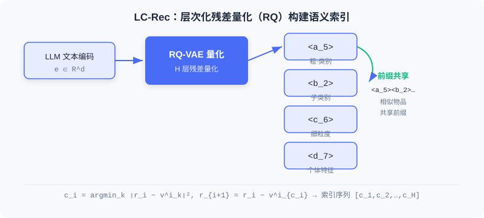

协同语义与语言语义的统一
📝 Before You Continue: 请先读完 1.1 的两种范式与能力演进、5.3 的 TIGER 语义 ID 与 OneRec 端到端生成。本章是那根「语义 ID」线索的深化——不止「生成」，还要让 LLM 理解这些 ID。
当推荐系统遇上大语言模型（LLM），表面看是「天作之合」：LLM 强大的语言理解与生成能力，似乎天然适合做推荐。但现实泼了一盆冷水——这二者说着两种完全不同的「语言」。推荐系统靠用户行为数据构建协同语义（collaborative semantics），而 LLM 理解的是文本中的语言语义（language semantics）。这道鸿沟不跨过去，再强的 LLM 也只是一个看不懂推荐世界的「外行」。
本章我们要解决的核心问题是：如何构建一种既能被 LLM 理解、又能承载协同语义的物品表示？ 答案不是「直接把标题丢给 LLM」，而是一套系统性的语义索引 + 语义对齐方案。
读完本章，你将能够：
- 用一句话说清协同语义与语言语义的鸿沟，并指出「标题替换 ID」的两个根本缺陷
- 描述LC-Rec 如何用层次化 RQ-VAE 构建语义索引，并解释「均匀语义映射」如何消解索引冲突
- 复述LC-Rec 三层对齐训练（序列预测 / 索引-语言对齐 / 推荐导向）如何把协同语义注入 LLM
- 说明PLUM 如何把这套思路推进到工业规模（多模态融合 + 持续预训练 + 任务微调）
- 完成 4 道分层练习题，巩固从学术原型到工业落地的语义对齐主线
9.1.0 两种「语言」的隔阂
推荐系统把每个物品表示为一个离散的 ID（如 item_12345）。这个 ID 本身不携带任何语义信息——它的含义完全来自用户行为数据中学习到的协同模式。通过分析「用户—物品」交互矩阵，模型能捕捉物品间隐含的相似性与关联，这种通过行为学到的表示，就是协同语义。
而 LLM 理解的是语言语义：它从预训练语料中学会了词汇、短语、句子之间的语义关联。当我们把物品 ID 直接喂给 LLM 时，这些离散标识符对它而言是**词表外（Out-of-Vocabulary, OOV）**的符号，无法与任何预训练知识产生关联。

💡 Key Insight: 一种直觉解法是用物品标题替换 ID（让 LLM 读标题）。但这有两个根本问题：第一，LLM 虽能理解标题字面含义，却无法感知该物品在推荐系统中的协同特征（用户群体的集体行为模式）；第二，基于候选集的文本生成方式无法扩展到全库检索场景，限制了模型的应用范围。
🧠 Mental Model: 两个说不同语言的人
把推荐系统想象成一位只看「会员编号」的资深店长——他闭着眼知道编号 12345 和 67890 的顾客总一起买东西（协同语义），却说不清编号长什么样。LLM 则是位满腹经纶的图书管理员，能和你聊「塞尔达传说」的剧情（语言语义），却对店长的会员编号一头雾水。要让两人合作，得先造一本「编号 ↔ 内容」的翻译词典——这正是语义索引要做的事。
9.1.1 LC-Rec：层次化语义索引与对齐
LC-Rec（Language-Collaborative Recommendation）提出了一套系统性方案：为每个物品学习一组离散的语义索引（Semantic Index），使其同时具备语言可理解性与协同表达能力。它包含两个关键技术模块：物品索引学习与语义对齐训练。
物品索引学习：层次化残差量化
LC-Rec 延续 5.3 介绍的语义 ID 思路，采用**层次化残差向量量化（Residual Vector Quantization, RQ）**构建物品索引。具体而言：
- 先用 LLM 对物品标题与描述编码，得到初始文本嵌入 ——保证索引构建起点是基于语言语义的。
- 训练一个 RQ-VAE，将连续嵌入映射为离散索引序列。编码器把 映射为潜在表示 ，随后进行 层残差量化。在第 层，码本 包含 个可学习的聚类中心：
最终物品被表示为索引序列 ，例如 <a_5><b_2><c_6><d_7>。

这种层次化设计带来两个重要特性：语义的逐层细化（从粗粒度类别到精细个体特征）与相似物品的索引前缀共享（内容相似的物品倾向共享更多前缀）。这为后续自回归生成提供了结构化先验。
均匀语义映射：用最优传输消解索引冲突
LC-Rec 的关键创新在于均匀语义映射（Uniform Semantic Mapping）。标准向量量化存在索引冲突：多个不同物品可能被映射到相同索引序列——在推荐中这是不可接受的，每个物品必须有唯一标识。现有方法（如 TIGER）通常靠增加索引层解决冲突，但会引入语义无关的噪声。
LC-Rec 从根源上缓解这一问题：在最后一层量化时引入均匀分布约束，确保物品在码本向量上的分配尽可能均衡。这被形式化为一个**最优传输（Optimal Transport）**问题：
其中 为一个批次的残差向量， 表示把残差 分配给第 个码本向量的概率。该优化通过 Sinkhorn-Knopp 算法求解，在保持语义连续性的同时显著降低索引冲突率。
Analysis: 均匀语义映射的代价是多了一个最优传输求解步骤（Sinkhorn 迭代），但换来「不增加额外索引层即可为绝大多数物品分配唯一语义 ID」——避免了 TIGER 式加层带来的语义噪声。这是表达力与唯一性之间的精巧权衡。
语义对齐训练：三层渐进注入协同语义
获得物品索引后，需要通过**指令微调（Instruction Tuning）**让 LLM 理解这些索引。LC-Rec 设计了三个层次的对齐任务：
第一层·序列物品预测——给定用户历史交互的索引序列，预测下一个物品的索引。由于索引有层次结构，LLM 在自回归生成时可逐层细化（先粗类别、再精细个体），与文本生成机制天然契合。
第二层·显式索引-语言对齐——建立索引与物品的双向对应：
- 索引到文本：给定索引，生成对应标题与描述（如看到
<a_66><b_197><c_236><d_223>生成「Pokémon Moon - Nintendo 3DS」）。 - 文本到索引：给定标题描述，生成对应索引序列。
这种双向对齐类似多模态学习的交叉重建，在两种表示间建立紧密语义桥梁。
第三层·推荐导向的隐式对齐——进一步强化协同语义融合，包含三类任务：
- 非对称预测：打破「输入输出均为索引」的对称，如输入索引、输出标题，迫使模型在协同模式与文本语义间建立深层关联。
- 基于意图的物品预测：从用户评论提取意图（如「寻找开放世界的多人冒险游戏」），预测推荐索引——让模型学会把自然语言需求与协同过滤模式结合。
- 个性化偏好推理：给定交互索引序列，生成对用户偏好的自然语言总结，为可解释推荐打基础。
💡 Key Insight: 经过三层对齐，协同语义与语言语义在 LLM 内部形成统一表示空间，具备层次化语义组织（索引越长描述越精细）、协同-语言融合（比纯文本检索更贴合推荐）、生成式全库检索能力（索引已入词表，无需候选集即可自回归检索）三大特性。
9.1.2 工业级对齐：PLUM 框架
LC-Rec 在学术数据集验证了可行性，但从学术到工业仍有巨大鸿沟。YouTube 每天产生数百万新视频、数十亿交互，面临多模态内容融合、实时增量更新、十亿级检索等挑战。PLUM（Pre-trained Language Models for Recommendations）正是为应对这些挑战而生，通过三阶段（增强型语义 ID 构建 → 领域持续预训练 → 生成式检索微调）实现工业级语义对齐。
多模态与协同信号的融合
LC-Rec 只用文本嵌入，但视频内容的丰富性远超纯文本（游戏直播的吸引力可能更多来自主播声音与画面流畅度）。PLUM 采用多模态嵌入拼接融合异构信息：文本编码器、视觉编码器、音频编码器分别提取 、、，简单拼接：
更关键的是，PLUM 显式引入协同过滤嵌入 弥补内容语义的不足——编码「哪些用户倾向一起观看」的协同模式，再与内容嵌入拼接：

这让语义 ID 不再只是内容标识，而是融合「内容是什么」与「用户如何感知」的双重语义。PLUM 还用多分辨率码本（128/256/512/1024）与渐进式掩码训练保证层次正确组织。
持续预训练：建立协同-语言双向映射
PLUM 把全部语义 ID token 加入 LLM 词表（4 层 RQ-VAE × 256 = 1024 个新 token），并用语义引导初始化为它们赋予有意义的起点（取最近的若干视频标题 LLM 嵌入均值）。随后用三类数据训练：
- 纯语义 ID 序列（50%）：从行为序列采样，预测下一个 ID，学纯粹协同模式。
- 纯领域文本数据：视频标题/描述/评论/字幕，防语言能力退化并学领域表达。
- ID-文本交错序列（占元数据语料 60–70%）：如「视频
<A37><B12><C5><D8>的标题是：Minecraft 建筑教程」，建立双向桥梁。
一个收获是模型展现出零样本跨模态理解：
<A37> → "任天堂相关内容"
<A37><B12> → "任天堂 Switch 游戏"
<A37><B12><C5> → "塞尔达传说系列"
<A37><B12><C5><D8> → "塞尔达传说旷野之息武器收集攻略"
这种能力完全通过大量交错序列隐式学习涌现，证明语义对齐已内化为模型的表示结构。
任务微调与生产验证
任务微调把推荐重定义为条件生成：给定用户多模态上下文（历史语义 ID 序列、文本、离散化数值如「完播率:高」），自回归生成推荐视频的语义 ID。PLUM 引入奖励加权对齐：
即高奖励交互（长时观看、点赞）代表「强语义关联」，值得深度编码；低奖励（误点、快速退出）可能是噪声，不应过拟合。
PLUM 在 YouTube 长/短视频全面上线，关键收益：语义 ID 唯一性 96.7%（高于 LC-Rec 的 94.0%）；有效词汇量覆盖 95% 曝光所需视频数在长视频提升 2.6 倍、短视频提升 13.2 倍；样本效率极高——900M MoE 模型仅需 2.5 亿样本，总训练成本（FLOPs）仅为传统大嵌入表模型（LEM）的 0.55 倍。
📊 Data Point: PLUM 证明即使在十亿级规模、多模态、实时推理的严苛约束下，协同语义与语言语义的统一也完全可行。但它仍是个端到端生成模型——能高效生成推荐，却无法解释为什么。这正是 9.2 要解决的问题。
⚠️ Common Mistakes in 9.1
| # | Mistake | Example | Why It's Wrong | Fix |
|---|---|---|---|---|
| 1 | 以为「标题替换 ID」就解决了语义对齐 | 直接把物品标题当 token 喂 LLM 做推荐 | 标题无协同语义，且无法全库检索 | 用语义索引（RQ-VAE）同时承载协同+语言 |
| 2 | 混淆协同语义与语言语义 | 认为 LLM 读懂标题就等于理解推荐 | 标题不含用户群体行为模式（协同信号） | 区分两种语义，靠对齐训练融合二者 |
| 3 | 以为加层总能解决索引冲突 | TIGER 式无限加 RQ 层 | 加层引入语义无关噪声，污染索引含义 | 用均匀语义映射（最优传输）均衡分配 |
| 4 | 把 PLUM 的拼接当注意力融合 | 「PLUM 用跨模态注意力融合」 | PLUM 用简单拼接，让码本自然发现重要模态 | 拼接给予各模态平等机会，更可解释 |
本章小结
📌 Key Takeaways
| Concept | Key Points | Why It Matters |
|---|---|---|
| 语义鸿沟 | 协同语义（ID）vs 语言语义（文本），ID 对 LLM 是 OOV | 跨不过鸿沟，LLM 看不懂推荐世界 |
| LC-Rec 语义索引 | 层次化 RQ-VAE + 均匀语义映射（最优传输） | 物品同时被 LLM 理解且承载协同信号 |
| 三层对齐 | 序列预测 / 索引-语言 / 推荐导向 | 渐进把协同语义注入 LLM 表示空间 |
| PLUM | 多模态+CF 融合、CPT、奖励加权微调 | 工业级验证，唯一性 96.7%、成本 0.55× |
| 统一表示空间 | 层次组织 / 协同-语言融合 / 全库检索 | 为 9.2 的「会思考」奠定理解基础 |
❓ FAQ
Q1: 为什么不直接用物品标题，非要搞语义索引？
A: 标题只携带语言语义，没有协同信号（用户群体的集体行为）；且基于候选集文本生成无法扩展到全库检索。语义索引把两种语义统一到一个可被 LLM 生成/检索的 token 序列里。
Q2: 均匀语义映射和 TIGER 加层有什么区别？
A: TIGER 靠增加 RQ 层避免冲突，但新层带来语义无关噪声；LC-Rec 的均匀语义映射在最后一层加均匀分布约束（Sinkhorn 最优传输），不增层也能给绝大多数物品唯一 ID，更干净。
Q3: PLUM 为什么用「拼接」而不是注意力融合多模态？
A: 拼接给予文本/视觉/音频/协同各模态平等表达机会，让 RQ-VAE 码本自然发现哪种模态对区分视频类别最重要（如音乐视频靠音频、教程靠文本），且更可解释、更省算力。
🔗 前后关联
- 1.1 / 5.3（范式与生成式演进）语义索引是 TIGER 思路的深化，本章解决「LLM 如何理解索引」。
- 9.2（OneRec-Think）在「认识物品」的语义对齐基础上，进一步让模型「学会思考」。
- 9.3（自主推理）RecZero/RecOne 延续语义索引表示，把推理从人工模板解放为自主探索。
Practice Problems
Work through all problems in order — they get progressively harder. Each has a complete solution you can reveal after trying it yourself.
Problem 9.1.1 — 辨析两种语义 🟢 Easy
判断以下描述属于协同语义还是语言语义：
- (a) 物品
item_8842与item_1190常被同一批用户购买。 - (b) 视频标题「塞尔达传说：旷野之息」描述的是开放世界冒险游戏。
- (c) 用户看完 A 后 80% 会看 B（行为共现）。
- (d) 评论区高频词是「治愈」「画风」。
💡 Solution (click to reveal)
Approach: 看信息来自「用户行为」还是「文本内容」。
- (a) 协同语义（共现行为）
- (b) 语言语义（标题文本含义）
- (c) 协同语义（行为转移概率）
- (d) 语言语义（评论文本语义）
Key points:
- 协同语义源于交互矩阵，语言语义源于文本/预训练语料。
- 语义索引的目标是把两者统一进一个表示。
Problem 9.1.2 — RQ-VAE 量化计算 🟢 Easy
已知物品文本嵌入 ，RQ-VAE 编码得 ，初始残差 。第一层码本 中离 最近的码字索引为 。请写出 的选取公式与残差更新式。
💡 Solution (click to reveal)
Approach: 直接套用层次化量化公式。
Key points:
- 每层在码本中找最近码字，再从残差里减掉它。
- 多层迭代得到索引序列 。
Problem 9.1.3 — 索引冲突分析 🟡 Medium
某推荐系统用 TIGER 式 3 层 RQ-VAE 构建语义 ID，但发现两个不同的游戏视频被映射到完全相同的 <a_3><b_1><c_7>。工程师决定加到 5 层解决。请指出这种做法的隐患，并说明 LC-Rec 的均匀语义映射为何是更优解。
💡 Solution (click to reveal)
Approach: 对比「加层」与「均匀映射」两种消冲突思路。
加层隐患： 增加 RQ 层会引入更多码字维度，其中部分层学习到的只是「为了区分而区分」的语义无关噪声，污染索引的层次语义含义，且增加了生成长度与推理成本。
均匀语义映射更优： 它在最后一层引入均匀分布约束（最优传输），用 Sinkhorn-Knopp 让物品在码本向量上分配尽量均衡，从根源降低冲突率，而不增加额外索引层——保持了索引的语义纯净度与生成效率。
Key points:
- 冲突的本质是码本分配不均，不是层数不够。
- 均衡分配比堆层数更干净、更高效。
Problem 9.1.4 — 设计对齐训练组合 🔴 Hard
你要为一家图书电商的 LLM 推荐系统设计语义对齐训练。请列出你采用的三类对齐任务（对应 LC-Rec 三层），并各写一条样本（输入→输出），说明它们分别注入哪类语义。
💡 Solution (click to reveal)
Approach: 套用 LC-Rec 三层对齐，落到图书场景。
- 序列物品预测（协同）：输入用户历史索引序列
<a_2><b_5><c_1> ... <a_2><b_5><c_9>，输出下一个索引<a_2><b_6><c_3>——学协同共现模式。 - 显式索引-语言对齐（双向）：
- 索引→文本：输入
<a_2><b_5><c_3>，输出「《人类简史》— 宏观历史科普」。 - 文本→索引：输入「《人类简史》」，输出
<a_2><b_5><c_3>。
- 索引→文本：输入
- 推荐导向隐式对齐（意图+偏好）：输入意图「想读轻松的历史读物」+ 历史索引，输出推荐索引；或输入历史索引，输出偏好总结「偏好宏观历史、轻学术」。
Key points:
- 三层由浅入深：共现 → 双向语义桥 → 意图/偏好推理。
- 每层都在把协同语义更深层地注入 LLM 表示空间。
🏆 Challenge: 工业落地论证
假设你要为日活千万的短视频平台引入 PLUM 式语义对齐。请写一段 200 字内论证：相比传统大嵌入表模型（LEM），语义对齐方案在样本效率、长尾覆盖、可解释性三个维度上为何更优？并指出一个必须前置解决的基础设施问题。
💡 Hint
论据：① 语义对齐的表示空间泛化更好，训练数据需求远低于 LEM（PLUM 仅 2.5 亿 vs LEM 数十亿/天），FLOPs 仅 0.55×；② 语义 ID 区分度更高，长尾内容覆盖率显著提升（短视频 13.2×）；③ 索引-文本对齐使推荐可解释。前置问题：必须先把「物品→语义 ID」的量化/对齐基础设施建好（类似 5.3 的语义 ID 流水线），否则 LLM 无 token 可用。